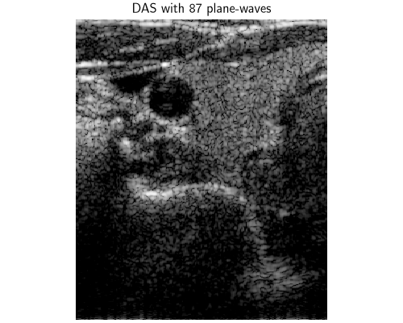
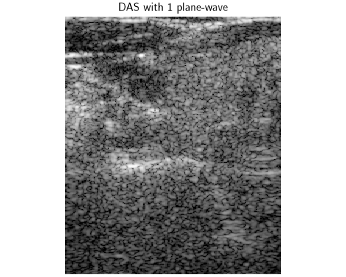
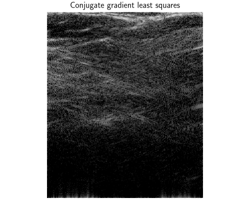
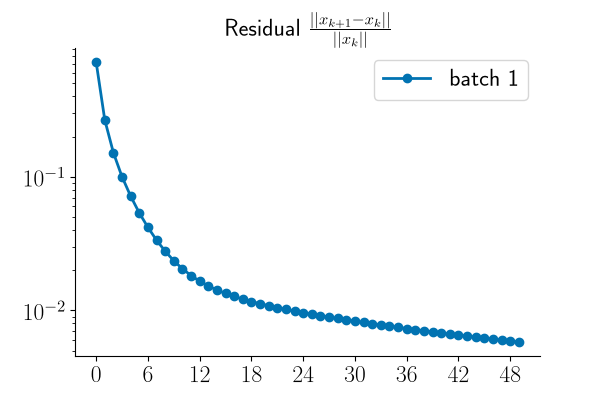
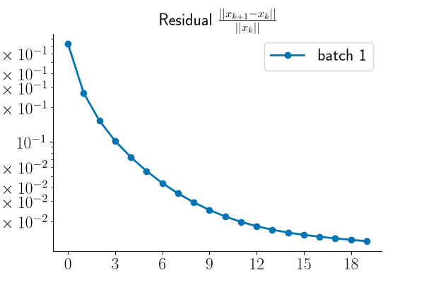
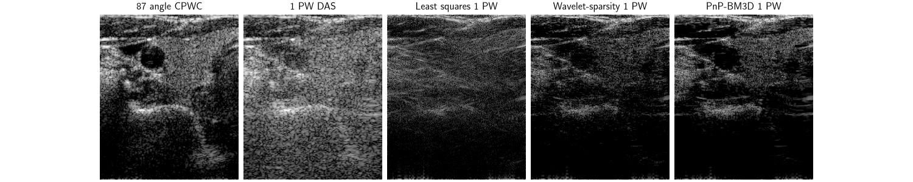

Note
New to DeepInverse? Get started with the basics with the 5 minute quickstart tutorial..
In-vivo ultrafast ultrasound reconstruction with Plug-and-Play#
This example shows how to use deepinv.physics.UltrasoundPlaneWave to reconstructs an in-vivo carotid acquisition of the
EPFL LTS5 ultrafast ultrasound dataset from raw RF ultrasound data.
In ultrafast ultrasound, data is acquired with plane-waves i.e. unfocussed transmits. Typically, images are reconstructed with the adjoint i.e. delay-and-sum (DAS) beamforming.
However, DAS with 1 or very few plane-waves is generally low quality, so one often uses many n_angles>>1 plane-waves.
This is called coherent plane-wave compounding (CPWC), but of course increases the acquisition time by a factor of n_angles.
Instead, we can therefore use more advanced image reconstruction techniques to reconstruct from very few plane-waves.
In this example, we demonstrate:
DAS with 87 plane-waves (CPWC): the adjoint using all transmitted angles, giving reference image quality.
DAS with only 1 plane-wave: the adjoint of the operator restricted to 1 plane-wave transmit. We expect low quality with high amount of sidelobes and low SNR.
Least squares with 1 plane-wave with
A_daggerusing conjugate gradient.Plug-and-Play with 1 plane-wave with
proximal gradient descentwith aPnPprior using wavelet and BM3D denoisers.
import math
import numpy as np
import torch
import deepinv as dinv
device = dinv.utils.get_device()
Selected GPU 0 with 7599.25 MiB free memory
Download raw RF data#
The EPFL LTS5 dataset provides real-valued radio-frequency (RF) channel data of shape
(n_angles, n_elements, n_samples) which we will use with
UltrasoundPlaneWave.
We download one frame of the data (rehosted on HuggingFace for the demo), which is of an in-vivo carotid acquisition.
y = (
torch.as_tensor(
np.load(
dinv.io.load_url(
dinv.utils.get_image_url("epfl_ufus_carotid_invivo_16654.npz")
)
)["data"]
)
.unsqueeze(0)
.to(device)
)
y /= y.abs().max()
Define acquisition settings#
The data was acquired with a GE 9L-D linear array (192 elements, 0.23 mm pitch, 5.3 MHz center frequency) on a Verasonics scanner. Per-channel raw RF data were sampled at 20.8 MHz, and 87 plane waves steered between -16.3 and +16.3 degrees were used in transmit.
Before constructing the physics, we need to define the probe geometry, the sampling settings and the transmit sequence of the dataset.
To run it on your own acquisition, replace:
z_min,z_maxandx_half(in meters) which define the image size and region(z_max - z_min) / pixel_size[0], 2 * x_half / pixel_size[1],the probe
center_freqandfrac_bw(pulse-echo fractional bandwidth),sampling_freqandelement_positions(in meters)the
anglestensor in radians andt0(time of first recorded sample relative to the plane wave crossing the center of the array)the speed of sound (default to 1540 m/s)
Note
See deepinv.physics.UltrasoundPlaneWave for how to set other parameters such as f-number or apodization.
z_min, z_max = 2e-3, 45e-3
x_half = 18e-3
center_freq = 5.3e6
frac_bw = 0.75 / math.sqrt(2)
n_elements = 192
pitch = 2.3e-4
element_width = 6.1206151719371e-05
sampling_freq = 20833333.333333332
# The elements are laid out along the lateral axis at a constant pitch and centered on zero.
ele_x = torch.arange(n_elements, dtype=torch.float32) * pitch + element_width / 2
ele_x = ele_x - ele_x.mean()
element_positions = torch.stack([ele_x, torch.zeros_like(ele_x)], dim=-1)
angles = math.radians(0.38) * torch.tensor(
[k * sign for k in range(43, 0, -1) for sign in (-1, 1)] + [0]
)
# Initial time to apply to the data for beamforming: t0 = -time_axis[0] + (peak_time - lens_correction)
t0 = 4.272e-06 + (4.1e-07 - 1.92e-07)
DAS with 87 plane waves#
First, we instantiate deepinv.physics.UltrasoundPlaneWave with all 87 angles and use this for beamforming
with delay-and-sum. This is also called coherent plane-wave compounding (CPWC). This will be our reference.
First we define the pulse.
lam = 1540.0 / center_freq
pixel_size = (lam / 8, pitch / 1.5)
img_size = (
int((z_max - z_min) / pixel_size[0]),
int(2 * x_half / pixel_size[1]),
)
pixel_origin = (z_min, -x_half)
pulse_bandwidth_hz = frac_bw * center_freq
sigma_t = math.sqrt(2 * math.log(2)) / (math.pi * pulse_bandwidth_hz)
n_half = math.ceil(3.5 * sigma_t * sampling_freq)
t_pulse = (torch.arange(2 * n_half + 1) - n_half) / sampling_freq
pulse = torch.exp(-(t_pulse**2) / (2 * sigma_t**2)) * torch.cos(
2 * torch.pi * center_freq * t_pulse
)
physics = dinv.physics.UltrasoundPlaneWave(
img_size=img_size,
angles=angles,
element_positions=element_positions,
n_samples=y.shape[-1],
sampling_frequency=sampling_freq,
sound_speed=1540.0,
pixel_size=pixel_size,
pixel_origin=pixel_origin,
t0=t0,
pulse=pulse,
f_number=1.5,
receive_apod_window="hann",
normalize=False,
device=device,
)
We compute the CPWC adjoint and plot the B-mode image with an amplitude floor of -50dB with deepinv.utils.bmode().
x_cpwc = physics.A_adjoint(y)
plot_extent = [-x_half * 1e3, x_half * 1e3, z_max * 1e3, z_min * 1e3]
dinv.utils.plot(
dinv.utils.bmode(x_cpwc, amplitude_floor_db=-50),
titles="DAS with 87 plane-waves",
extent=plot_extent,
aspect="equal",
rescale_mode="clip",
figsize=(5, 4),
)

DAS with 1 plane-wave#
We build the operator restricted to the single plane-wave transmit with normal incidence (0 degrees). In this case, the problem is severely ill-conditioned as the number of projections is restricted. The DAS will therefore have severe sidelobes and low SNR.
fast_idx = [int(angles.abs().argmin())]
physics.update(angles=angles[fast_idx])
y_1pw = y[:, :, fast_idx]
x_1pw = physics.A_adjoint(y_1pw)
dinv.utils.plot(
dinv.utils.bmode(x_1pw, amplitude_floor_db=-50),
titles="DAS with 1 plane-wave",
extent=plot_extent,
aspect="equal",
rescale_mode="clip",
figsize=(5, 4),
)

Going one step-further: Least-squares reconstruction#
As a baseline, we solve the least-squares (LS) problem \(\min_x \|Ax - y\|^2\) for the single-plane wave imaging experiment by applying the conjugate gradient algorithm. As the problem is severly ill-posed the LS estimate is of relatively bad quality.
x_pinv = physics.A_dagger(y_1pw, solver="CG", max_iter=20, tol=1e-10)
dinv.utils.plot(
dinv.utils.bmode(x_pinv, amplitude_floor_db=-50),
titles="Conjugate gradient least squares",
extent=plot_extent,
aspect="equal",
rescale_mode="clip",
figsize=(5, 4),
)

Plug-and-Play Reconstruction#
In order to overcome the ill-conditioning of the forward operator, one may inject some a priori knowledge on the RF data in the inverse problem.
These priors can be explicit e.g. sparsity in some basis, or more elaborate e.g. lying in the fixed point set of some generic denoisers.
This leads to the well-known plug and play reconstruction which relies on the proximal gradient descent algorithm (see deepinv.optim.PGD)
along with the plug-and-play prior (see deepinv.optim.PnP)
data_fidelity = dinv.optim.L2()
lipschitz = physics.compute_norm(
torch.randn(1, 1, *img_size, device=device, dtype=torch.float32),
max_iter=100,
tol=1e-4,
verbose=False,
)
step_size = 1.99 / lipschitz.item()
image_scale = x_pinv.std().item()
x_init = x_1pw * (image_scale / x_1pw.std())
/local/jtachell/deepinv/deepinv/deepinv/physics/forward.py:639: DeprecationWarning: Using `compute_norm(squared=True)` is deprecated. Use `compute_sqnorm()` instead to compute the squared spectral norm (||A^T A||_2). In a future version, `compute_norm()` will compute the non-squared spectral norm (||A||_2) by default.
warnings.warn(
/local/jtachell/deepinv/deepinv/deepinv/physics/functional/matrix.py:42: UserWarning: Power iteration: convergence not reached
warnings.warn("Power iteration: convergence not reached")
Wavelet prior#
As a first prior, we rely on sparsity in the wavelet basis, i.e. we solve
\(\min_x \tfrac{1}{2}\|Ax - y\|^2 + \lambda \|\Psi x\|_1\) where \(\Psi\) is
an orthonormal wavelet transform. The proximity operator of \(\|\Psi \cdot\|_1\)
is the soft-thresholding wavelet denoiser and PGD with
deepinv.optim.WaveletPrior amounts to iterative soft-thresholding.
prior_wavelet = dinv.optim.WaveletPrior(level=3, wv="db4", p=1, device=device)
lambda_reg_wavelet = 0.5
model_wavelet = dinv.optim.PGD(
data_fidelity=data_fidelity,
prior=prior_wavelet,
stepsize=step_size,
lambda_reg=lambda_reg_wavelet,
max_iter=50,
early_stop=True,
verbose=True,
show_progress_bar=True,
custom_init=lambda y, physics: {"est": (x_init,)},
)
model_wavelet.eval()
with torch.no_grad():
x_pnp_wavelet, metrics_wavelet = model_wavelet(y_1pw, physics, compute_metrics=True)
dinv.utils.plot_curves({"residual": metrics_wavelet["residual"]})

0%| | 0/50 [00:00<?, ?it/s]
2%|▏ | 1/50 [00:00<00:05, 9.12it/s]
4%|▍ | 2/50 [00:00<00:05, 9.18it/s]
6%|▌ | 3/50 [00:00<00:05, 9.19it/s]
8%|▊ | 4/50 [00:00<00:05, 9.20it/s]
10%|█ | 5/50 [00:00<00:04, 9.20it/s]
12%|█▏ | 6/50 [00:00<00:04, 9.20it/s]
14%|█▍ | 7/50 [00:00<00:04, 9.20it/s]
16%|█▌ | 8/50 [00:00<00:04, 9.21it/s]
18%|█▊ | 9/50 [00:00<00:04, 9.21it/s]
20%|██ | 10/50 [00:01<00:04, 9.20it/s]
22%|██▏ | 11/50 [00:01<00:04, 9.21it/s]
24%|██▍ | 12/50 [00:01<00:04, 9.21it/s]
26%|██▌ | 13/50 [00:01<00:04, 9.21it/s]
28%|██▊ | 14/50 [00:01<00:03, 9.21it/s]
30%|███ | 15/50 [00:01<00:03, 9.21it/s]
32%|███▏ | 16/50 [00:01<00:03, 9.21it/s]
34%|███▍ | 17/50 [00:01<00:03, 9.21it/s]
36%|███▌ | 18/50 [00:01<00:03, 9.21it/s]
38%|███▊ | 19/50 [00:02<00:03, 9.21it/s]
40%|████ | 20/50 [00:02<00:03, 9.21it/s]
42%|████▏ | 21/50 [00:02<00:03, 9.21it/s]
44%|████▍ | 22/50 [00:02<00:03, 9.21it/s]
46%|████▌ | 23/50 [00:02<00:02, 9.20it/s]
48%|████▊ | 24/50 [00:02<00:02, 9.20it/s]
50%|█████ | 25/50 [00:02<00:02, 9.21it/s]
52%|█████▏ | 26/50 [00:02<00:02, 9.21it/s]
54%|█████▍ | 27/50 [00:02<00:02, 9.20it/s]
56%|█████▌ | 28/50 [00:03<00:02, 9.20it/s]
58%|█████▊ | 29/50 [00:03<00:02, 9.19it/s]
60%|██████ | 30/50 [00:03<00:02, 9.20it/s]
62%|██████▏ | 31/50 [00:03<00:02, 9.20it/s]
64%|██████▍ | 32/50 [00:03<00:01, 9.20it/s]
66%|██████▌ | 33/50 [00:03<00:01, 9.20it/s]
68%|██████▊ | 34/50 [00:03<00:01, 9.21it/s]
70%|███████ | 35/50 [00:03<00:01, 9.21it/s]
72%|███████▏ | 36/50 [00:03<00:01, 9.21it/s]
74%|███████▍ | 37/50 [00:04<00:01, 9.21it/s]
76%|███████▌ | 38/50 [00:04<00:01, 9.21it/s]
78%|███████▊ | 39/50 [00:04<00:01, 9.21it/s]
80%|████████ | 40/50 [00:04<00:01, 9.20it/s]
82%|████████▏ | 41/50 [00:04<00:00, 9.20it/s]
84%|████████▍ | 42/50 [00:04<00:00, 9.21it/s]
86%|████████▌ | 43/50 [00:04<00:00, 9.20it/s]
88%|████████▊ | 44/50 [00:04<00:00, 9.21it/s]
90%|█████████ | 45/50 [00:04<00:00, 9.21it/s]
92%|█████████▏| 46/50 [00:04<00:00, 9.21it/s]
94%|█████████▍| 47/50 [00:05<00:00, 9.21it/s]
96%|█████████▌| 48/50 [00:05<00:00, 9.21it/s]
98%|█████████▊| 49/50 [00:05<00:00, 9.20it/s]
100%|██████████| 50/50 [00:05<00:00, 9.20it/s]
100%|██████████| 50/50 [00:05<00:00, 9.20it/s]
BM3D prior#
As a second prior, we rely on a plug-and-play approximation (deepinv.optim.PnP) i.e. the image lies in the
fixed point set of the generic BM3D denoiser (deepinv.models.BM3D).
pnp_max_iter = 20
sigma_denoiser = image_scale * torch.logspace(
math.log10(0.15), math.log10(0.03), pnp_max_iter
)
denoiser_bm3d = dinv.models.BM3D(use_legacy=False, device=device)
model_bm3d = dinv.optim.PGD(
data_fidelity=data_fidelity,
prior=dinv.optim.PnP(denoiser=denoiser_bm3d),
stepsize=step_size,
sigma_denoiser=sigma_denoiser,
max_iter=pnp_max_iter,
early_stop=True,
verbose=True,
show_progress_bar=True,
custom_init=lambda y, physics: {"est": (x_init,)},
)
model_bm3d.eval()
with torch.no_grad():
x_pnp_bm3d, metrics_bm3d = model_bm3d(y_1pw, physics, compute_metrics=True)
dinv.utils.plot_curves({"residual": metrics_bm3d["residual"]})

0%| | 0/20 [00:00<?, ?it/s]
5%|▌ | 1/20 [00:00<00:14, 1.28it/s]
10%|█ | 2/20 [00:01<00:14, 1.29it/s]
15%|█▌ | 3/20 [00:02<00:13, 1.28it/s]
20%|██ | 4/20 [00:03<00:12, 1.28it/s]
25%|██▌ | 5/20 [00:03<00:11, 1.28it/s]
30%|███ | 6/20 [00:04<00:10, 1.29it/s]
35%|███▌ | 7/20 [00:05<00:10, 1.28it/s]
40%|████ | 8/20 [00:06<00:09, 1.29it/s]
45%|████▌ | 9/20 [00:07<00:08, 1.29it/s]
50%|█████ | 10/20 [00:07<00:07, 1.28it/s]
55%|█████▌ | 11/20 [00:08<00:07, 1.28it/s]
60%|██████ | 12/20 [00:09<00:06, 1.28it/s]
65%|██████▌ | 13/20 [00:10<00:05, 1.29it/s]
70%|███████ | 14/20 [00:10<00:04, 1.29it/s]
75%|███████▌ | 15/20 [00:11<00:03, 1.29it/s]
80%|████████ | 16/20 [00:12<00:03, 1.29it/s]
85%|████████▌ | 17/20 [00:13<00:02, 1.29it/s]
90%|█████████ | 18/20 [00:14<00:01, 1.29it/s]
95%|█████████▌| 19/20 [00:14<00:00, 1.28it/s]
100%|██████████| 20/20 [00:15<00:00, 1.28it/s]
100%|██████████| 20/20 [00:15<00:00, 1.28it/s]
Comparison of reconstructions#
We observe that by using more advanced image reconstruction techniques, we can suppress the artifacts typically associated with ultrafast ultrasound imaging.
dinv.utils.plot(
{
"87 angle CPWC": dinv.utils.bmode(x_cpwc, amplitude_floor_db=-50),
"1 PW DAS": dinv.utils.bmode(x_1pw, amplitude_floor_db=-50),
"Least squares 1 PW": dinv.utils.bmode(x_pinv, amplitude_floor_db=-50),
"Wavelet-sparsity 1 PW": dinv.utils.bmode(
x_pnp_wavelet, amplitude_floor_db=-50
),
"PnP-BM3D 1 PW": dinv.utils.bmode(x_pnp_bm3d, amplitude_floor_db=-50),
},
rescale_mode="clip",
extent=plot_extent,
aspect="equal",
figsize=(15, 3),
)

Total running time of the script: (0 minutes 37.119 seconds)